Op het ALC vliegveld in Duiven zijn we tegen 13.00uur, op 26 Maart 2022, met z’n allen in de weer. Hans en voormalige secretaris van de club hebben de RES Clinic voorbereid. Veel van de ALC leden zijn aanwezig om de kneepjes van het RES vliegen te leren. Enkele lijntjes zijn uitgezet en de ‘breefing’ kan beginnen.
Niet duidelijk wat RES vliegen is? Dit is het vliegen met een zweefvliegtuig met een maximale spanwijdte van 2 meter. Alleen besturing van richtingsroer, hoogteroer en remklep(pen) zijn toegestaan. Het toestel wordt met een elastiek op hoogte gebracht. Zie voor meer informatie dit artikel over RES vliegen.
De stoelen voor de niet vliegers zijn opgesteld om alles nauwkeurig te volgen en de informatie te absorberen. De zeiltjes liggen klaar met de RES toestellen die een laatste inspectie ondergaan, zenders en ontvangers worden gechecked. Zonnebrillen op en na een stukje theorie kan het RES vliegen in de praktijk gebracht worden.
Het was een goed georganiseerde clinic met fantastisch mooi weer. Elkaar geholpen met (tijdelijke) reparaties zodat er weer gevlogen kan worden, dit geeft het echte clubgevoel. We hebben allemaal genoten. Hieronder een impressie.
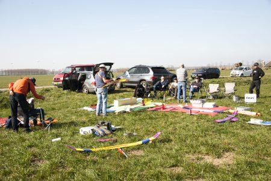
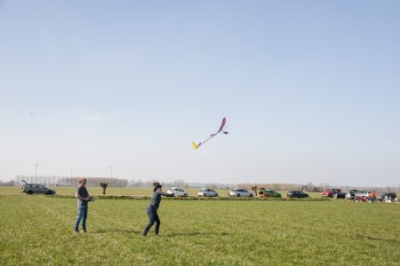
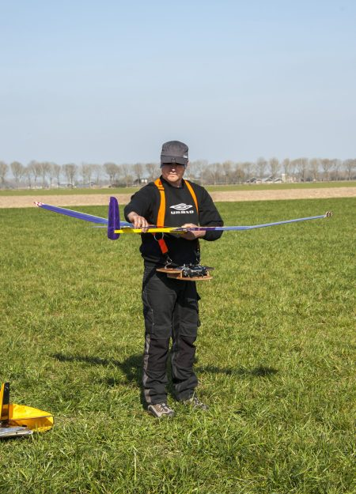
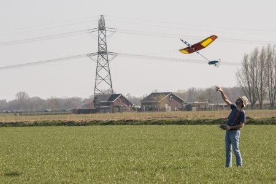
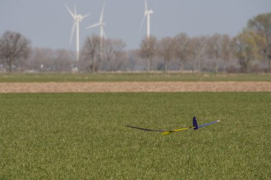
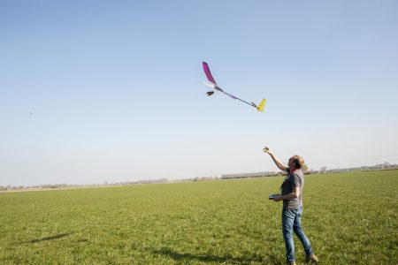
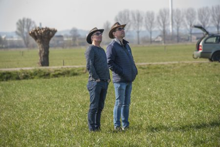
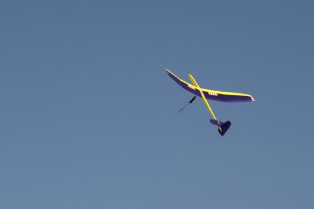
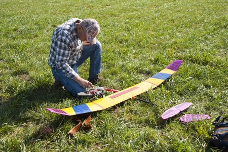
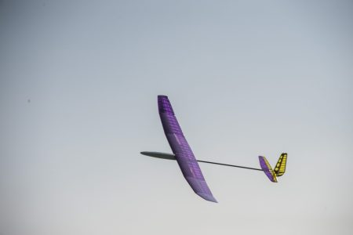
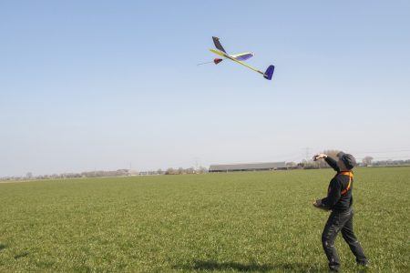